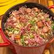

Como preparar um Arroz de carreteiro
O nome 'carreteiro' vem do condutor de carro de boi - carreta, no RS.
O arroz-de-carreteiro nasceu no pampa, ganhou o País e hoje é dos nossos pratos mais populares.
Se fizermos o ranking dos pratos mais populares do Brasil, o arroz-de-carreteiro estará entre eles
Ingredientes :
- 1 kg de carne seca
- 1 cebola picada
- 1 colher (sopa) de cheiro-verde
- 2 xícaras (chá) de arroz
- 2 dentes de alho picados
- 6 colheres (sopa) de azeite
- Sal a gosto
Preparo:
- Deixe a carne seca de molho de véspera, troque a água e cozinhe até ficar macia. Desfie.
-
Frite-a em uma panela com azeite.
- Quando a carne estiver dourada, coloque a cebola e o alho.
- Junte o arroz e frite.
- Acrescente a água fervente e cozinhe em fogo baixo até o arroz ficar macio. Salpique o cheiro-verde e sirva em seguida.
- Bom apetite!